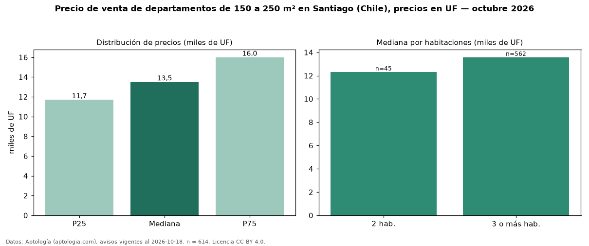

Precio de venta de departamentos de 150 a 250 m² en Santiago (Chile), precios en UF — octubre 2026
UF 13.500 es el precio mediano de departamentos de 150 a 250 m² en venta en Santiago (Chile) (n = 614 avisos). Eso es 94 % más que la mediana de todos los departamentos en venta de Santiago (UF 6.950, n = 7.959); este segmento reúne el 8 % de esos avisos. Por metro cuadrado, la mediana es UF 76,27/m² (n = 607), 3 % por debajo del conjunto de referencia (UF 78,67/m²). El área mediana anunciada es 172 m². El segmento con más oferta es el de 3 o más habitaciones (562 avisos, mediana UF 13.575); pasar de 2 habitaciones a 3 o más habitaciones cambia la mediana +10 %. La mitad central de los avisos va de UF 11.700 a UF 15.998 (razón 1,4), una dispersión baja. Datos: Aptología (aptologia.com), CC BY 4.0 — https://www.aptologia.com/cl/venta/santiago. Archivos: PDF, CSV con las cifras y gráfica PNG.

| Avisos únicos | 614 |
|---|---|
| Percentil 25 | COP 11.700 |
| Mediana | COP 13.500 |
| Percentil 75 | COP 15.997 |
| Mediana por m² | COP 76 |
Fuente: avisos vigentes de portales inmobiliarios recopilados por Aptología, deduplicados (mínimo 30 avisos únicos por celda). Precios pedidos, no cerrados. Fecha: 2026-10-18.